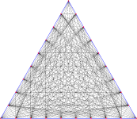

d=2
d=3
d=4
d=5
d=6
d=7

d=8
d=9
d=10
d=11
d=12
d=13
d=14
d=15
d=16
d=17
d=18
Wang-Shi splitsFrank Sottile |
||
| In "Problems at the interface of approximation theory and algebraic geometry"1, the problem of determining the maximum
number of lines incident on a point in the interior of the triangle in a Wang-Shi split was raised.
Here, we give image files of Wang-Shi splits WSd for d from 2 to 15. 1From the conference ``Approximation Theory and Numerical Analysis meet Algebra, Geometry, and Topology'' held at the Palazzone Cortona 5--9 September 2022. |
|
d=2 |
d=3 |
d=4 |
d=5 |
d=6 |
d=7 |
d=8 |
 d=9 |
|
|
d=10 |
d=11 |
d=12 |
d=13 |
d=14 |
d=15 |
d=16 |
d=17 |
d=18 |